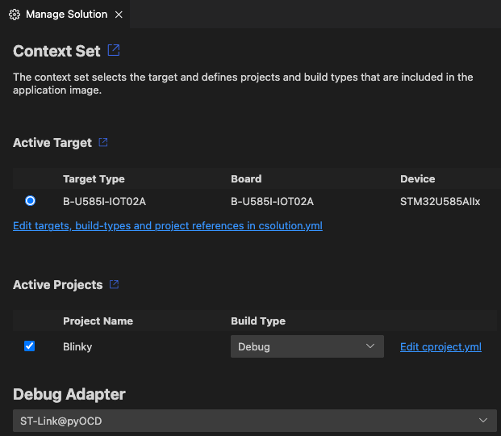

Manage solution settings
In the Manage solution settings view you can set the context of your solution. The context set selects the target and defines projects and build types that are included in the application image.
In the Solution outline, click Manage Solution Settings  . The
Manage Solutions view opens:
. The
Manage Solutions view opens:

You can change the Active Target type, the Active Projects included in the build. You can change the build type of a project. You can also change the run and debug configurations, or add new configurations.
Active Target
Select a Target Type to specify the hardware used to build the solution. Some examples are also compatible with Arm Virtual Hardware (AVH) targets, in which case more options are available. For more details, read the AVH solutions overview.
Click Edit targets, build-types and project references in csolution.yml to specify your target types by editing the YAML file directly.
Active Projects
This section shows each project that is part of the solution. Use the checkbox to add a project to or to remove it from the context set. The Project Name is shown, but cannot be changed.
Select a Build Type for each project. You can set different build types for different projects in your solution.
Click Edit cproject.yml next to a project to open the <project-name>.cproject.yml file. YAML syntax support helps you
with editing.
Note
The projects and build types you can select are defined by contexts for a particular target. Some options might be
unavailable if they have been excluded for the target selected. To learn more about contexts and how to modify them, see
the Context and
Conditional build
information in the CMSIS-Toolbox documentation. For example, you can use for-context and not-for-context to include
or exclude target types at the project: level in the *.csolution.yml file.
Run and Debug
Choose a run configuration and a debug configuration to use for your solution. You may select different run and debug configurations for each project included in the solution. You can also:
Move your mouse over an entry in the list and click the pen icon to edit an existing configuration with the visual editor:

Click + Add new to add a new configuration.
Errors and warnings
You can inspect errors and warnings for a context set. For active projects in the context set, errors and warnings display when you move your cursor over the Context Set in the status bar. The indicator is red for errors and yellow in case of warnings.

Click the indicator to open the Output tab for the CMSIS Solution category. If you previously closed the Manage Solution view, then this action also re-opens the view.
You can also go to the Problems tab and check for errors.
Open the main.c file and check the IntelliSense features available. To find out about the different features, read the Visual Studio Code documentation on IntelliSense.